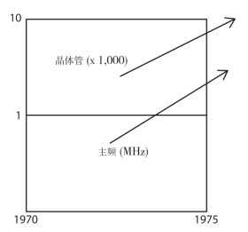
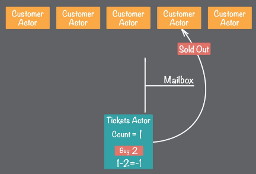

Actor模型
Gul Agha提出了两个论点:一个Actor对象可以创建其他Actor对象；一个顺序进程无法创建其他顺序进程。
这两个论点并非贬低顺序程序的作用。而且也不是说，一个顺序进程无法执行其他顺序进程（数十年的主流开发经验已经证明了这一点）。但是，顺序进程仍旧是静态的，而且只能完成专门化的任务。与此相比，在高动态环境（在这种环境中可以根据需要创建和删除Actor对象，甚至可以在运行程序时，根据领域或操作环境需求更改Actor对象的行为）中，Actor 模型既可以利用顺序编程技巧，也可以利用函数编程技巧。响应式系统不仅拥有并发性和分布性，而且还拥有弹性、动态性、响应性和韧性。
Actor模型
Actor 模型的起源
Actor 模型是一种用于处理并发计算的数学模型，它将Actor 对象用作并发计算的通用基元。与其他计算模型不同，发明Actor模型的灵感源于物理学理论，如广义相对论和量子力学。
可以将Actor 模型视为创建响应式应用程序的手段之一。使用这种具体的响应式软件开发方法，可以细致地处理响应式应用程序的主要方面：响应性、韧性、弹性和消息驱动性。它通过消息传递方式实现这四个方面的功能。
Carl Hewitt 博士是Actor 软件开发模型的发明者，他为研究该模型投入了数十年时间。Carl Hewitt 博士发现某些计算问题需要使用并发和分布模式解决，但他在做这项研究时第一台晶体管计算机仅出现了14 年，还不存在多核处理器。在1973年，功能最强大的Intel 处理器仅含有4000 至5000 个晶体管，其主频还没有超过1MHz。Carl Hewitt 博士在研究Actor 模型时，能够使用的功能最强大的处理器。处理器的硬件能力无法将Carl Hewitt 提出的理论付诸实践。因此，当时分布式和并行系统知识的理论模型与现实情况不匹配。

了解Actor 模型
Actor 是一种计算实体，它会对收到的消息做出回应，并且可以做下列事情：
■ 向其他Actor 对象发送一定数量的消息。
■ 创建一定数量的新Actor 对象。
■ 设定对下一条消息做出的回应方式。
执行这些操作的次序不分先后，而且可以通过并行方式执行它们。
在功能齐全的Actor 系统中，所有事物都是Actor 对象。这意味着我们通常使用的基本数据类型（如字符串和整型）都是Actor对象。
Actor 是由状态（state）、行为（behavior）、邮箱（mailbox）三者组成的：
- 状态（state）：状态是指 actor 对象的变量信息，状态由 actor 自身管理，避免并发环境下的锁和内存原子性等问题。
- 行为（behavior）：行为指定的是 actor 中计算逻辑，通过 actor 接收到的消息来改变 actor 的状态。
- 邮箱（mailbox）：邮箱是 actor 之间的通信桥梁，邮箱内部通过 FIFO 消息队列来存储发送发消息，而接收方则从邮箱中获取消息。
Actor 模型描述了一组为避免并发编程的公理：
- 所有的 Actor 状态是本地的，外部是无法访问的。
- Actor 必须通过消息传递进行通信
- 一个 Actor 可以响应消息、退出新 Actor、改变内部状态、将消息发送到一个或多个 Actor。
- Actor 可能会堵塞自己但 Actor 不应该堵塞自己运行的线程
并发线程通信方式
一般而言，有两种策略用来在并发线程中进行通信：共享数据和消息传递 。
共享数据
使用共享数据 的并发编程，一般会使用各种锁去处理相关的线程安全问题；但同时也要处理各种锁所带来的问题。
死锁 ：锁的设计不当，会出现两个或两个以上的进程在执行过程中，由于竞争资源或者由于彼此通信而造成的一种阻塞的现象，若无外力作用，它们都将无法推进下去的现象。
效率低： 在高度竞争的阶段，很有可能出现很长的线程队列，他们都在等待递减计数器。但使用队列的方式的问题在于可能造成众多阻塞线程，也就是每个线程都在等待轮到它们去执行一个序列化的操作。
消息传递
实现消息传递有两种常见类型：基于channel的消息传递和基于Actor的消息传递 。
和共享数据方式相比，消息传递机制最大的优势在于不会产生数据竞争状态。共享内存是倾向于强一致性弱隔离性的，例如悲观锁同步的方式就是使用强一致性的方式控制并发，而 Actor 模型天然是是强隔离性且弱一致性的，所以 Actor 模型在并发中有良好的性能，而且易于控制和管理。
Actor消息传递避免数据竞争原理
想象我们在抢火车票，有两个线程并发地调整计数器，该计数器目前的值是 5。线程一想要将计数器的值递减 3，而线程二想要将计数器的值递减 4。它们都会检查当前计数器的值，并且会断定计数器的值大于要递减的数量。然后，它们都会继续运行并递减计数器的值。最后的结果就是 5 - 4 - 3 = -2。这样的结果会造成货品的过度分配，违反了特定的业务规则。
现在，我们将基于线程的实现替换为 Actor。 当然，Actor 也要在线程中运行，但是 Actor 只有在有事情可做的时候才会使用线程。在我们的计数器场景中，请求者代表了 Customer Actor。门票的数量现在由 Actor 来维护，它持有当前计数器的状态。Customer Actor 和 Tickets Actor 在空闲时（也就是没有消息要处理）都不会持有线程。
要初始购买操作，Customer Actor 需要发送一条 buy 消息给一个 Tickets Actor。在这样的 buy 消息中包含了要购买的数量。当 Tickets Actor 接收到 buy 消息时，它会校验购买数量不超过当前剩余的数量。如果购买请求是合法的，数量就会递减，Tickets Actor 会发送一条信息给 Customer Actor，表明订单被成功接受。如果购买数量超出了剩余数量的话，Tickets Actor 将会发送给 Customer Actor 一条消息，表明订单被拒绝了。Actor 模型本身确保处理是按照同步的方式进行的。
我们分三步展示 actor 之间的交互：
- Customer Actor 发送 buy 消息
- Tickets Actor 处理消息
- Tickets Actor 拒绝购买请求
1.Customer Actor 发送 buy 消息： Customer Actor，它们各自发送 buy 消息给 Tickets Actor。这些 buy 消息会在 Tickets Actor 的收件箱（mailbox）中排队。发送一条消息并未将 “执行线程” 从发送者转移到目标。一个 actor 可以发送一条消息并继续无阻塞地运行。因此，在同样的时间内，它可以完成更多任务。
2.Tickets Actor 处理消息： 如下展示的是请求购买五张门票的第一条消息。
当一个 Tickets Actor 收到一条消息时，Tickets Actor 将这条消息添加到队列尾部，如果 Tickets Actor 没有被调度执行，它将被标记为 ready。一个调度器获取这个 Tickets Actor 并开始执行它：Tickets Actor 在队列头部取出一条消息。
随后，Tickets Actor 检查购买数量没有超出剩余门票的数量。在当前的情况下，门票数量是 15，因此购买请求能够接受，剩余门票数量会递减，Tickets Actor 还会发送一条消息给发出请求的 Customer Actor，表明门票购买成功。
Tickets Actor 会处理其收件箱中的每条消息。需要注意，这里没有复杂的线程或锁。这是一个多线程的处理过程，但是 Actor 系统会管理线程的使用和分配。
在这里 Actor 区别于多线程并发模型的是，多线程并发模型改变了 actor 并对内部状态，而 actor 独立处理收到的消息，并且它们一个一个地响应连续到来的消息。虽然每个 actor 连续地处理发给它的消息，不同的 actors 之间并发地工作，所以一个 actor 系统可以同时处理多条消息。因为每个 actor 中同时最多处理一个消息，所以 Actor 模型无需使用锁。
3.Tickets Actor 拒绝购买请求： 当请求的数量超过剩余值时，Tickets Actor 会如何进行处理。这里所展现的是当我们请求两张门票，但是仅剩一张门票时的情况。Tickets Actor 会拒绝这个购买请求并向发起请求的 Customer Actor 发送一条 “sold out”的消息。

当然，在线程方面有一定经验的开发人员会知道，可划分为两个阶段的行为检查和门票数量递减能够通过同步的操作序列来完成。以在 Java 中为例，我们可以使用同步的方法或语句来实现。但是，基于 Actor 的实现不仅在每个 Actor 中提供了自然的操作同步，而且还能避免大量的线程积压，防止这些线程等待轮到它们执行同步代码区域。在门票样例中，每个 Customer Actor 会等待响应，此时不会持有线程。这样所形成的结果就是基于 Actor 的方案更容易实现，并且会明显降低系统资源的占用。
Actor 系统和Actor 对象基本特点
■ 直接通过异步消息传递方式进行通信： 如果Actor 对象A1 要向Actor 对象A2 发送消息M1，那么Actor 对象A1 就必须知道Actor 对象A2 的地址。如果Actor 对象A1 知道Actor 对象A2的地址，那么它就能够直接向Actor 对象A2 发送消息M1，但Actor 对象A2 会使用独立线程接收和处理消息M1。换言之，消息M1 是通过异步方式被发送给Actor 对象A2 的。实际上，在发送者Actor 对象和接收者Actor 对象之间还存在一个间接处理层——邮箱（消息缓存单元）。即便如此，我们还是将这种消息传输方式称为直接传输方式，因为编程模型提供了一种宝贵的抽象，该抽象使消息就像直接从一个Actor 对象传输到另一个Actor 对象一样。
■ 状态机： Actor 模型支持有限状态机。当Actor 对象转换为某个预设状态时，就能够改变对未来接收到的信息的处理模式。通过变为另一种消息处理器，Actor 对象就成了一种有限状态机。
■ 无共享： 一个Actor 对象不会与其他Actor 对象或相关组件共享可变状态
■ 无锁的并发处理方式： 因为Actor 对象不会共享它们的可变状态，而且它们在同一时刻仅会接收一条消息，所以在对消息做出回应前，Actor 对象永远都不需要尝试锁定它们的状态。因为无须使用锁策略，所以它们能够将多核CPU 从锁定问题中解放出来，集中精力提高吞吐量，并且使所有处理响应式组件的线程不被阻塞。
■ 并行性： 并发处理方式和并行处理方式是不同的概念。并发处理方式是指多个计算操作同时出现。并行处理方式是指以并发处理方式完成单个目标。并行性是通过将单个的复杂处理过程拆分成较小的任务并以并发处理方式执行它们实现的。当等级较高的Actor 对象能够将多个任务分派给多个下级Actor 对象，或者任务中含有复杂的处理层级时，就适合通过Actor 模型使用并行处理方式。
■ Actor 对象的系统性： 单个Actor 对象不具备并行性。Actor 对象的量级非常轻，因此在单个系统中创建许多Actor 对象是受推荐的处理方式。任何问题都可以通过添加Actor 对象来解决。
■ 位置透明性： 使用抽象引用代表Actor 对象的地址。如果Actor 对象A1获得了Actor 对象A2 的引用，Actor 对象A1 就能够向Actor 对象A2 发送消息。提供支持的Actor 系统会负责处理传送消息的操作，不论Actor对象A2 是位于本地Actor 系统还是位于远程Actor 系统中。
■ 监督： 在Actor 对象之间建立依赖关系，父Actor 对象监督子（下级）Actor 对象。当监督者Actor 对象向下级Actor 对象分派任务时，就必须对这些下级Actor 对象出现的失效情况做出回应。合法的回应包括继续运行、重启和停止下级Actor 对象。监督者还可以通过使本身失效从而使失效情况升级，这会将失效控制权上交给监督者的父对象（监督者的监督者）。监督机制适于在并行处理方式中使用，在该方式中监督者会将多个任务分派给多个下级对象，从而形成任务处理层级。
作为一种计算实体，Actor 对象与原子类似。在有可用线程的情况下，每个Actor 对象都会在收到消息时处理这条消息并且在同一时刻仅能处理一条消息，Actor 对象的性能完全由其本身的吞吐量决定，因此可以说，Actor 对象是按照自己的节奏在工作。然而，因为Actor 对象不会与其他Actor 对象共享可变状态，所以当通过计算或数据处理操作处理收到的消息时，Actor 对象也不必锁定系统资源。
在无锁情况下，理论上，Actor 对象的吞吐速度会非常快。即使在某些特殊情况中，如果计算和处理操作比较小、集中和耗时较短，那么通常消息就会以极为迅速的方式被发送、接收和处理。这就使你有可能避免使用阻塞机制和导致阻塞问题的机制（串行设备）。因此，Actor 系统就能够拥有高性能、高吞吐量和低操作延迟。
参考文献
《响应式架构：消息模式Actor实现与Scala、Akka应用集成》 沃恩.弗农